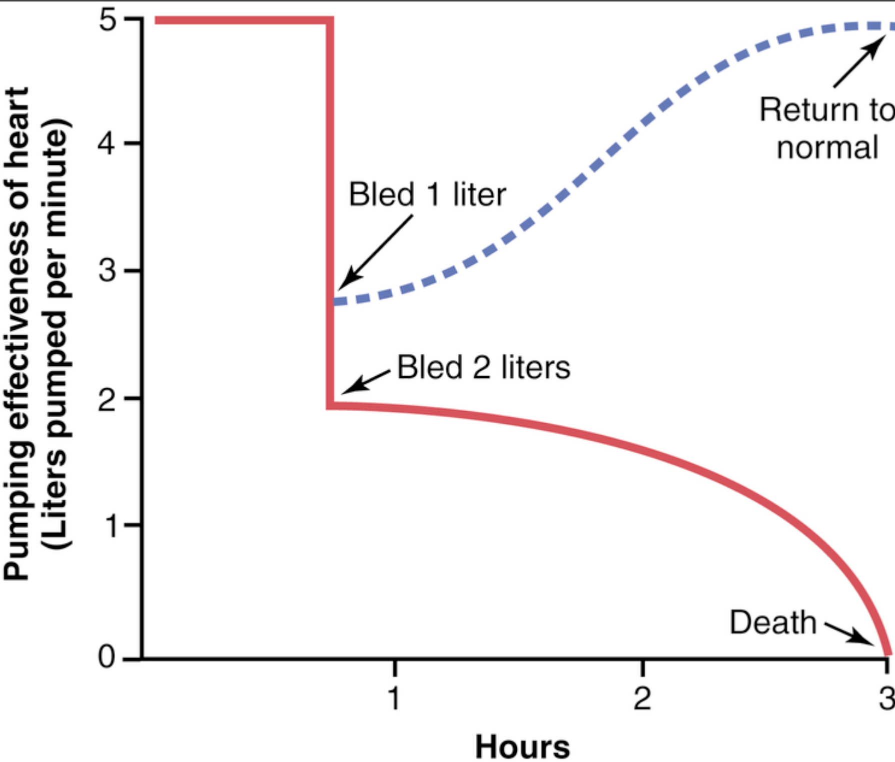

Fisiologi merupakan ilmu yang berupaya untuk menjelaskan mengenai mekanisme fisik dan kimia yang atas bagaimana suatu kehidupan bermula dan berkembang. Setiap jenis kehidupan, dari virus yang paling sederhana hingga pohon yang paling besar atau manusia yang sangat rumit memiliki ciri ??fungsionalnya?? masing-masing. Oleh karena itu, bidang fisiologi yang luas dapat dibagi menjadi fisiologi virus, fisiologi bakteri, fisiologi sel, fisiologi tumbuhan, fisiologi invertebrata, fisiologi vertebrata, fisiologi mamalia, fisiologi manusia, dan masih banyak lagi subdivisinya.
xxxxxxxxxx.
xxxxxxxxx.
xxxxxxxxx.
xxxxxxxxx.
xxxxxxxxx.
Sumber
1. Hall, John, E. and Michael E. Hall. Guyton and Hall Textbook of Medical Physiology. Available from: Elsevier
eBooks+, (14th Edition). Elsevier - OHCE, 2020.